3D 打印 · Bambu Lab X2D 使用指南
下载软件
图片 4-1
Bambu Lab was founded in Shenzhen in 2020, simplifying the complex operations of traditional 3D printing and implementing industrial grade high-speed and high-precision automation technology on desktop devices, suitable for beginners and professional creators.
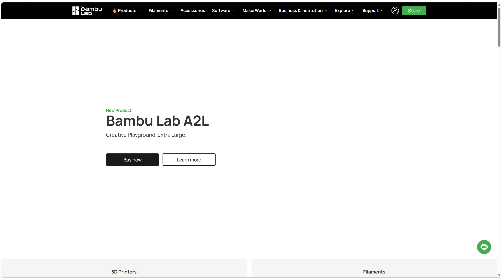
图片 4-2 - Download and install
学习使用方法
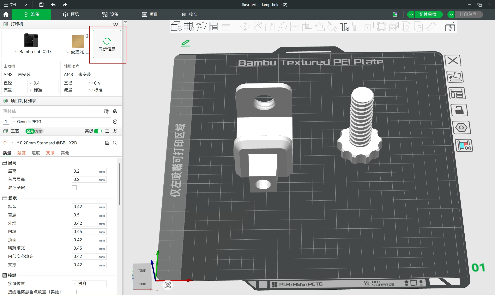
图片 4-3
Change equipment: Tuozhu Bambu Lab X2D
Click on information synchronization to synchronize with the printer
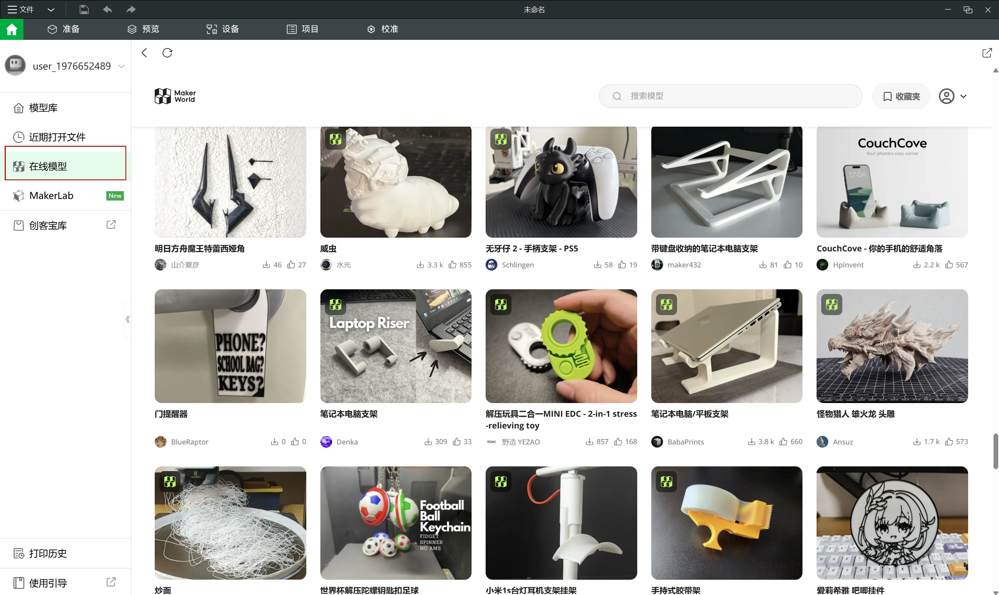
图片 4-4
Select what to print from the online model and import it
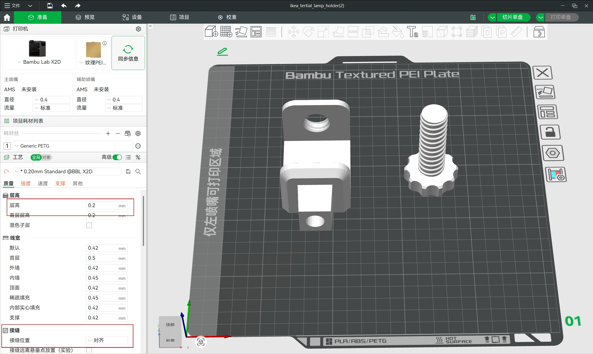
图片 4-5
The slice height of each layer. A smaller layer height means higher accuracy and longer printing time. Adjust as needed.
Start printing the position of the exterior wall.
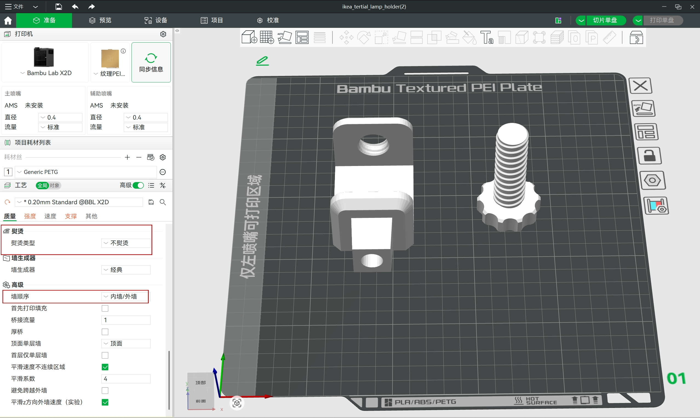
图片 4-6
Refers to using small flow to print at the same height on the surface, making the surface smoother. This setting allows you to choose which layers to iron, depending on your needs.
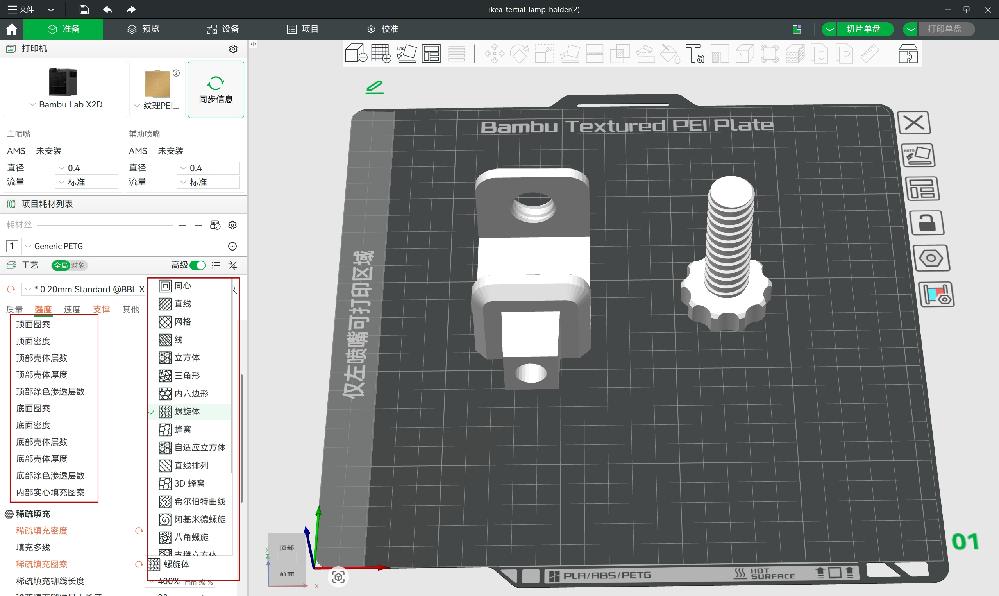
图片 4-7
Adjust the top pattern, bottom pattern, and internal solid filling pattern according to the requirements.
The top is usually filled with "concentric" patterns, while the recommended solid filling patterns for the interior are "spiral" and "honeycomb".
图片 4-8
Printing consumables for the support/raft layer main body (interface). Default "refers to not specifying a specific consumable thread and using the current consumable.
图片 4-9
The z-gap between the support top and the model.
The z-gap between the bottom of the support and the model when the support is generated on the surface of the model.
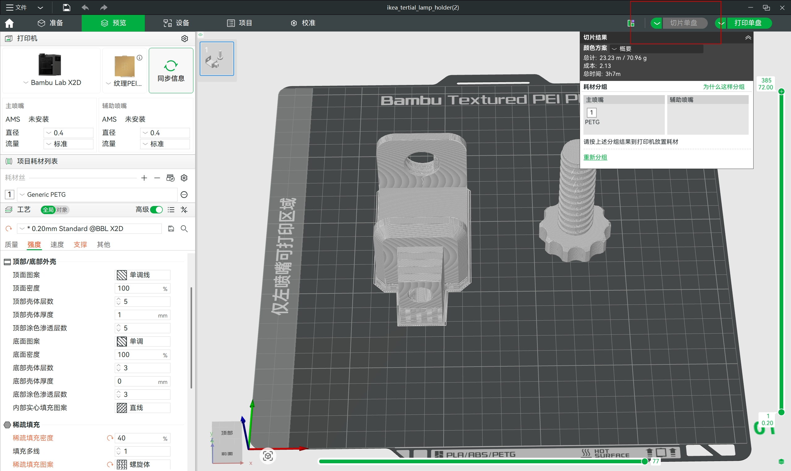
图片 4-10
Click on Slice Single Disk
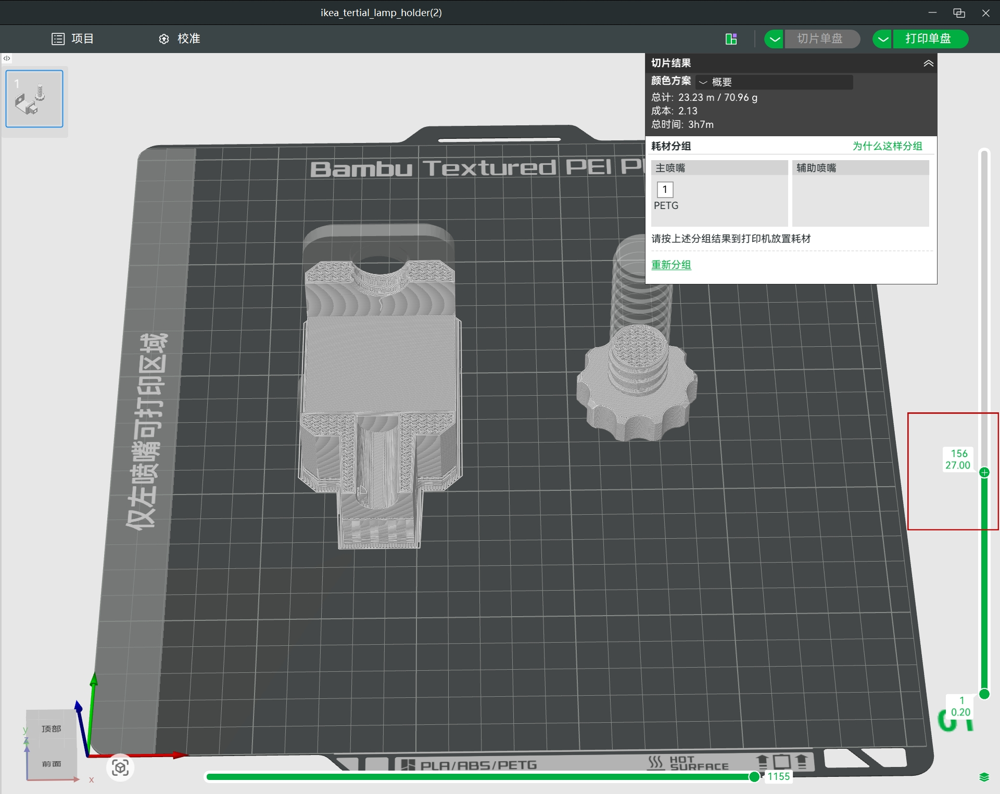
图片 4-11
Check the seam position and internal solid filling pattern.
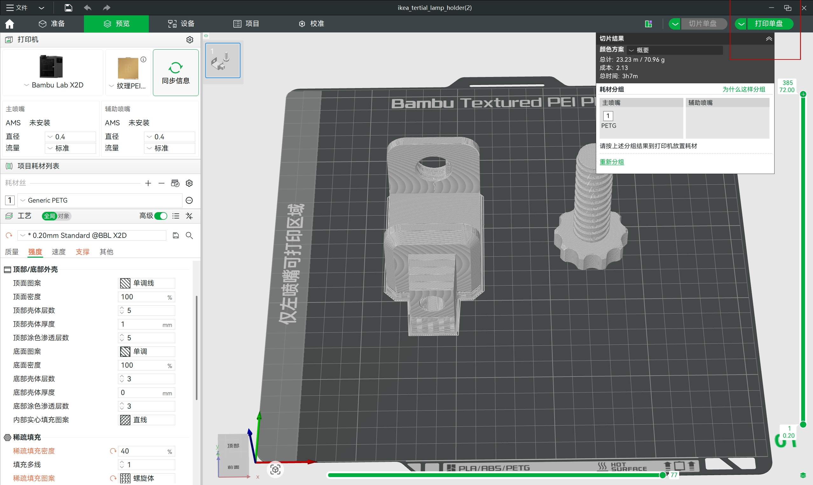
图片 4-12
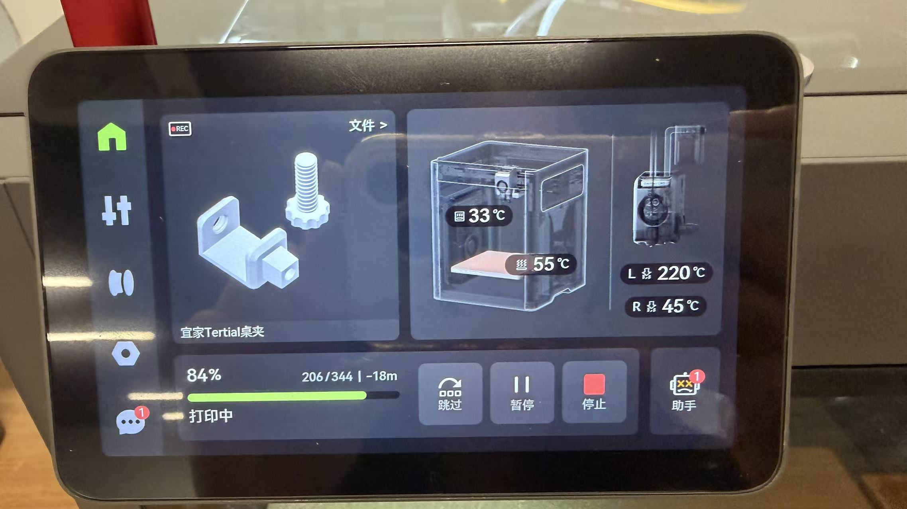
图片 4-17
Open 'Print Single Disc'
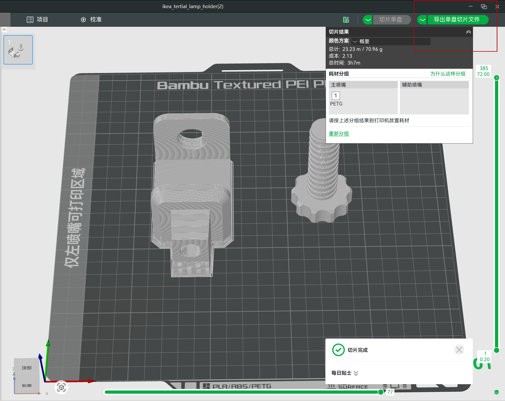
图片 4-13
Insert the USB drive and click on 'Export Single Disk Slice File'
Insert the 3D printer and select the exported model. After confirming that there are no errors, proceed with printing.
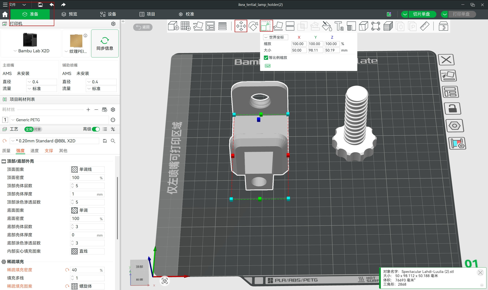
图片 4-15
If you need to adjust the size of the model, please do so in the "Preparation" interface.